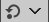
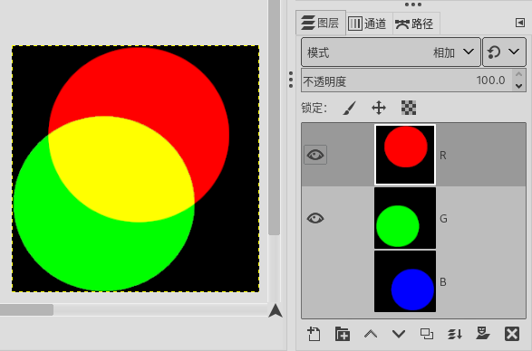
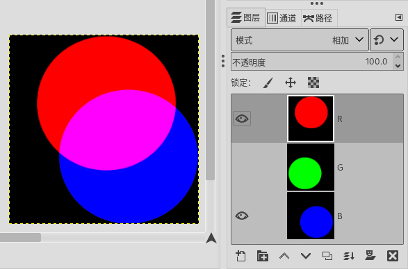
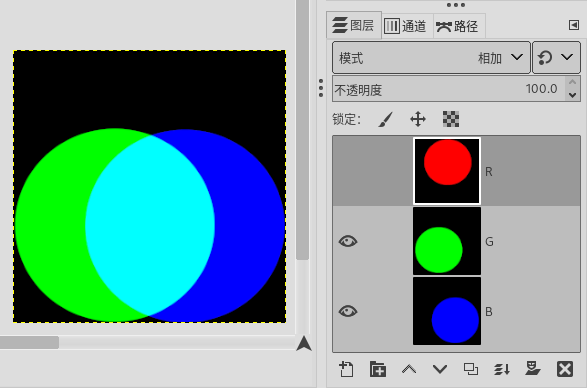
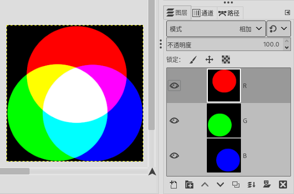

(可停靠对话框→图层⇒模式)
直达模式列表
(图层模式并不是对话框，而是图层对话框中的一个下拉选项，只不过这个选项中的内容比较多，所以在这里单独用一个章节来进行说明)
图层⇒模式 正常
截图中，图层的模式已经设置为正常
图层的模式也叫图层的混合模式{blending mode}。GIMP通过模式来确定当前活动图层中的像素与其下方的图层中的像素如何混合。所以，图层的模式的变化，可能会导致图像的整体效果发生变化。
图层的模式的存在，使您可以实现极为复杂的颜色变化操作。
因为是当前图层与下方图层的混合，所以，图层的模式对于只有一个图层的图像没有意义。
 驿窗注：默认 vs. 过时
驿窗注：默认 vs. 过时
图层模式选择框的右侧有一个切换按钮 ，它可以切换图层模式为默认或者过时。
{kind=link}
过时模式是GIMP2.8及以前版本使用的图层模式计算方法，在2.10及后续版本中已经改为默认模式。新版本中过时模式仍然存在的原因是为了兼容以前版本的GIMP所创建的.xcf文件。这些旧的.xcf文件中如果有保存图层模式相关内容，那么在2.10版本中打开这些.xcf文件时，图层模式会使用过时模式。
新创建的图像文件，请使用默认模式，不要使用过时模式，。
GIMP目前有38种图层模式，下面我们对这些模式进行说明。
下面是模式列表：
驿窗注：双语→翻译的精确性
开源软件汉化是否正确/精确，通常取决于译员个人。这里在菜单后面以斜体标注英文原文，以方便用户精确理解。
正常 Normal
融化 Dissolve
颜色擦除 Color erase
擦除 Erase
合并 Merge
分割 Split
仅变亮 Lighten only
仅亮度变亮 Luma/luminance lighten only
滤色 Screen
减淡 Dodge
相加 Addition
仅变暗 Darken only
仅亮度变暗 Luma/luminance darken only
相乘 Multiply
加深 Burn
线性加深 Linear burn
叠加 Overlay
柔光 Soft light
强光 Hard light
亮光 Vivid light
点光 Pin light
线性光 Linear light
实色混合 Hard mix
差值 Difference
排除 Exclusion
减去 Subtract
增益提取 Grain extract
增益合并 Grain merge
相除 Divide
HSV色相 HSV Hue
HSV饱和度 HSV Saturation
HSL颜色 HSL Color
HSL明度 HSV Value
LCh色相 LCh Hue
LCh浓度 LCh Chroma
LCh颜色 LCh Color
LCh亮度 LCh Lightness
亮度 Luminance
计算的本质是数学，图层模式的各种算法更是数学应用的直接体现。所以，我们在对模式进行说明时，可以尝试用数学公式对模式的算法进行描述，下面是公式会用到的三个参数：
当前图层的像素值称为当前图层，用字母M表示；(可以理解为蒙版，Mask)
当前图层下面的图层的像素值称为下方图层，用字母I表示；(可以理解为蒙版的目标图像，Image)
模式设定后产生的结果像素值称为混合效果，用字母E表示；(可以理解为效果，Effect)
例如，正常模式的算法公式为：E=M
那么，为什么要理解算法的数学公式？我们来看下面的的算法公式应用示例。
算法公式应用示例
图层模式种类很多，算法的复杂程度也各不相同，我们以相对简单的相加模式为例来说明理解公式的意义。
假设我们要向其他人解释三原色RGB的工作原理，那么我们可能需要这样一张图片：
RGB色光加色法原理图
上面这张图很明显，就是三个原色(RGB)的圆放在一起，两两重合部分按色光加色法显示CMY颜色；最中间按色光加色法显示白色。
那么，怎样用GIMP来画这样一张图呢？
用GIMP画三原色原理图
我们用相加模式的算法公式 E=min[(M+I),255]来解释一下上面这张图：
公式的意思是，当前图层选择相加模式后，生成的效果是把当前图层与下方图层的像素值相加；如果相加后大于255，那么只取255。
我们看一下三个图层的模式设置为相加模式后如何计算。由于黑色部分色值是(0,0,0)，所以任何颜色与黑色相加，结果都保持原色，不受黑色区域影响，仅RGB两两重叠区域的颜色才会发生变化。变化如下：
图层R中圆的色值为(255,0,0)，图层G中圆的色值为(0,255,0)，二者重叠的部分相加，即(255,0,0)+(0,255,0)，结果色值为(255,255,0)，而这个色值正好是黄色Y：
 R+G: (255,0,0)+(0,255,0)=(255,255,0)
图层R中圆的色值为(255,0,0)，图层B中圆的色值为(0,0,255)，二者重叠的部分相加，即(255,0,0)+(0,0,255)，结果色值为(255,0,255)，而这个色值正好是品红色M：
 R+B: (255,0,0)+(0,0,255)=(255,0,255)
图层G中圆的色值为(0,255,0)，图层B中圆的色值为(0,0,255)，二者重叠的部分相加，即(0,255,0)+(0,0,255)，结果色值为(0,255,255)，而这个色值正好是青色C：
 G+B: (0,255,0)+(0,0,255)=(0,255,255)
中间三色叠加部分，按公式应该为(255,0,0)+(0,255,0)+(0,0,255)，结果是(255,255,255)，正好是白色W：
 R+G+B: (255,0,0)+(0,255,0)+(0,0,255)=(255,255,255)
上面所有的计算结果均没有超过255。
这就是公式的应用：通过算法公式，我们知道如何最快捷地画一个RGB原理图。
默认情况下，我们的图层模式会使用正常模式，而使用正常模式来画这张RGB原理图，就会比较麻烦。
所以，如果您了解模式算法并能熟练应用图层模式，随时预测当前图层与下方图层重叠的部分可能产生什么效果，那么在绘画时，就会更灵活地应用各种效果到图像当中。
 驿窗注：透明区域的计算
驿窗注：透明区域的计算
目前，图层模式的算法公式中并没有关于透明度的解释，即，如果参与模式计算的最底图层有透明区域，那么最终得到的混合效果可能更复杂。
例如，上面的示例中，如果最下面的B图层存在透明区域，那么最后生成的混合效果与我们的预期会不一样，从而导致我们无法顺利完成那张RGB原理图。
最近一次更新：2024-07-19